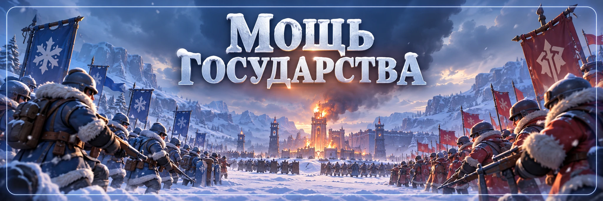

Мощь государства
Автор: SOVA58
«Мощь государства» это полный межгосударственный цикл SvS.
Подбор соперника → подготовка → межгосударственная битва → восстановление войск.
Подробные тактики вынесены отдельно: Подготовка к SvS и SvS: боевая фаза.
🔎 1. Подбор соперника
Перед подготовкой игра определяет государство-соперника.
После подбора уже можно посмотреть сильнейшие альянсы, оценить противника и начать общую координацию государства.
Снятие снаряжения, сброс героев и другие попытки искусственно уменьшить отображаемую мощь не считаем надёжной тактикой.
📦 2. Подготовка
Подготовка проходит в течение 5 тематических дней. Каждый день даёт очки за определённые действия и ресурсы.
- 🔥 Огненные кристаллы и развитие города.
- ⏱️ Ускорения.
- 🦸 Фрагменты героев и Колесо удачи.
- 📚 Эксперты.
- 🐾 Питомцы.
- 👑 Снаряжение губернатора и талисманы.
- ⚔️ Снаряжение героев.
- 🪖 Обучение и повышение войск.
- 🌾 Сбор ресурсов.
- 🐻 Охота на зверей и Полярный ужас.
Главное: не тратить всё в первый подходящий день. Часть ресурсов может снова дать очки позже, поэтому запас распределяем.
Открыть «Подготовку к SvS»
Перед тратой всегда сверяем текущие задания прямо в игре.
🏆 Зачем выигрывать подготовку
Победа подготовки определяет, в каком государстве будет проходить битва за Солнечный замок.
Победитель подготовки идёт на территорию проигравшего государства. Поэтому подготовка это не просто рейтинг и дополнительные награды.
⚔️ 3. Боевая фаза
В боевую субботу открываются межгосударственные переходы и PvP.
Игроки могут атаковать города противника, защищать своих и участвовать в битве за Солнечный замок.
Если больше не участвуете, снова ставим щит и не оставляем город открытым.
🛡️ Если не участвуете в PvP
Ставим щит заранее. Особенно если будете офлайн или в городе много войск.
Не снимаем щит ради случайной атаки или рейда, если не собираемся полноценно участвовать в PvP.
Под щитом можно помогать союзникам подкреплениями, не превращая свой город в бесплатную цель.
🏰 Солнечный замок
Замковая часть решается координацией всего государства: рейд-лидерами, гарнизоном, башнями, лечением, телепортами и командами руководства.
Подробную механику замка здесь не дублируем.
👑 Итог SvS
Победа в подготовке и победа в замке это две разные части события.
Финальный результат зависит от того, кто выиграл подготовку и кто контролировал замок. Поэтому нельзя считать подготовку или замок единственным результатом SvS.
❤️ 4. Восстановление войск
После боевой фазы часть подходящих потерь можно вернуть.
Обязательно открываем восстановление, забираем своё и помогаем союзникам.
Если в альянсе есть игроки с огромными потерями, полезно сначала направлять помощь именно им.
💬 Опыт игроков
- ✅ SvS начинается не в субботу, а с накопления ресурсов между циклами.
- ✅ Не сливаем редкие материалы ради маленькой награды текущего события, если они нужны на подготовку.
- ✅ Подготовку выигрывает весь сервер, а не один сильный игрок.
- ✅ Средним и слабым игрокам щит часто полезнее случайного PvP.
- ✅ После замка не снимаем защиту автоматически.
- ✅ После боя не забываем про восстановление и помощь союзникам.
🚫 Частые ошибки
- ❌ Начинать копить только за неделю до SvS.
- ❌ Использовать все материалы в первый день подготовки.
- ❌ Игнорировать задания следующих дней.
- ❌ Считать победу подготовки обычным рейтингом.
- ❌ Оставлять город без щита в боевую субботу.
- ❌ Снять щит ради случайного рейда.
- ❌ Считать, что после замка вся боевая фаза закончилась.
- ❌ Пропустить восстановление войск.
✅ Быстрая схема
→ 🔎 смотрим соперника
→ 📦 5 дней правильно распределяем запасы
→ 🏆 боремся за подготовку
→ 🛡️ неучаствующие ставят щиты
→ ⚔️ боевые игроки работают по командам
→ 🏰 сражаемся за Солнечный замок
→ 🛡️ после замка не забываем про защиту
→ ❤️ восстанавливаем войска
SvS выигрывается не одним субботним боем.
Сначала государство копит ресурсы и проходит подготовку, затем организованно проводит боевую фазу, а после восстанавливает армию.
Каждый этап важен.